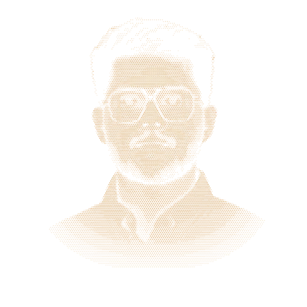

Saurav Sajesh, embedded AI engineer
I put machine-learning models on constrained hardware: a Cortex-M4, an Edge TPU, a ROS robot. M.Eng. 2026, thesis grade 1.9.

Embedded AI projects and papers
Pick a project to open its summary, its architecture step by step, and its stack with the measured results.
See the code on GitHubApproach
A model is finished when it runs on the device, inside its memory and its latency limit. I build for that point: quantized networks on a microcontroller, vision on an Edge TPU, navigation on a robot.